Long Tail Labs is a Web 3.0 startup with double bottom line ambitions. Not only does it seek financial profits from delighting customers with products and services, it also seeks to positively impact the Black community by serving as a catalyst for generational wealth creation and increased participation in the asset ownership economy.
## Landscape
We are currently in the midst of a tectonic shift and most people have no idea. The blockchain technology that underpins Bitcoin and other cryptocurrencies is what is known as a GPT (General Purpose Technology). Prior GPTs, like the wheel and the steam engine, have revolutionized human existence. Broad adoption of blockchain technology is ushering in the third iteration of the Internet, dubbed Web 3.0.
> General-purpose technologies (GPTs) are technologies that can affect an entire economy (usually at a national or global level). GPTs have the potential to drastically alter societies through their impact on pre-existing economic and social structures.
Studying the winners of the first and second iterations of the Web, it is obvious that Black Americans were largely left out. None of the major (or perhaps even minor) brands from those eras was founded or owned by Black people.
Thinking about the root cause(s) as to why Black founders and investors seem to be absent from the prior eras, the following issues come to mind.
1. Limited access to financial networks (less than 1% of venture funding goes to black entrepreneurs)
1. Money does not circulate within the Black community
1. Largely diffuse and dispersed Black middle class (community)
1. There are few examples of (tech entrepreneurship) success where it matters. For most Black children, rapper Travis Scott and NBA star Kyrie Irving have more name recognition than private equity billionaire Robert Smith.
## Opportunity
At the cusp of Web 3.0, we have the opportunity to change the narrative and subsequent reality. We have the opportunity to include ourselves and leverage decentralized technologies to create generational wealth within and throughout the Black community.
Long Tail Labs exists to provide decentralized products, built on blockchain technology, to the unwashed masses. Our tagline is “blockchain for the rest of us”. While companies like Dapper Labs target mega markets by partnering with the NBA and NFL, Long Tail Labs is focused on niche markets that are less attractive to the hit makers and, thus, bereft of competition. These niche and underserved markets are substantial in aggregate, per [The Long Tail, Chris Anderson, October 2004](https://www.wired.com/2004/10/tail/).
Long Tail Labs has three (3) primary objectives:
1. Build & maintain Web 3.0 infrastructure
1. Operate a blockchain-focused venture studio to support Black founders
1. Partner with code schools, that specifically target Black children, in order to
- Infuse blockchain / web 3.0 curriculum
- Increase the supply of Black blockchain developers
- Help the schools leverage blockchain and crypto technologies to develop revenue streams that support a move toward a self-sustainability model
Long Tail Labs current product lineup includes the following:
- Gamified NFT collection and Metaverse aimed at reducing Chicago gang violence
- Closed-loop, pseudonymous, peer-to-peer payment platform for an underserved, highly lucrative, niche market
- General Metaverse for increasing money circulation within the Black community